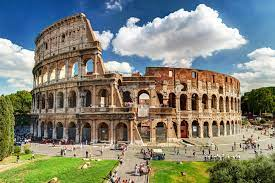
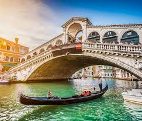
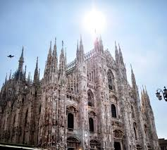
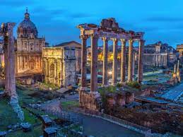
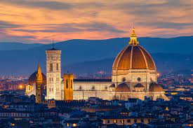
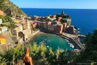

Italia
Italia es un pais que está ubicado en el continente de Europa. Es un lugar muy reconocido por sus hermosos paisajes, comida, y cultura. Italia tiene muchos lugares turisticos que durante todo el año son visitados por turistas de todo el mundo. La capital de Italia es Roma, donde se puede encontrar el coliseo romano. Son muchos los lugares turisticos en Italia, y acuntinuación te los voy a presentar.

Lugares Turisticos

Venecia es muy reconocida por sus increibles canales que van por toda la ciudad. Tiene alrrededor de 170 canal por toda la ciudad, 3,000 canales y 400 puentes! Hay gente que dice que es un laberinto en la vida real. El gran canal de Venecia es una de la mayores atraciones en la ciudad.
Milan es muy reconocido por la gran arquitectura que tiene. Por ejemplo, puedes encontrar grandes cosas como la Pinacoteca de Brera, uno de los grandes museos de toda europa. Este fue fundado en 1809 por Napoleón Bonaparte como el hermano italiano del Louvre que queda en Paris.


Roma es la capital de Italia y tambien es capital de la región del Lacio. Es el municipio más poblado de Italia y la tercera ciudad más poblada de toda la Unión Europea. Uno de los lugares mas importantes de toda Roma es el coliseo romano, ya que es un monumento de la Antigua Roma.
Florencia es una ciudad italiana que se considera la cuna del arte. En esta ciudad podras encontrar muchas cosas, como por ejemplo, palacios, estatuas, estructuras artísticas y una infinidad de museos. Uno de los lugares más importantes de Florencia es La Piazza della Signoria, que se considera la plaza más importante actualmente.


La Torre de Pisa es una de las 7 Maravillas del Mundo Moderno! Esta torre es el campanario de la Catedral de Santa María de la Asunción en la Plaza de la Catedral y cuenta con 55.86 metros de altura, 8 plantas y unos 294 escalones en total! La torre de Pisa es muy reconocida gracias a su peculiar forma, y por como está elaborada.
El vaticano es mayormente reconodido por ser una imagen religiosa hacia Jesucristo, tambien se conoce como una iglesia católica en la cual vive el Papa Francisco. El vaticano tambien es una ciudad la cual recibe el nombre gracias al templo ya mensionado.


El Coliseo se convirtió en el mayor anfiteatro romano, con una estructura de 188 metros de longitud, 156 metros de ancho y 57 metros de altura. Fué construido en ladrillo y cubierto con travertino etse se dividía en cinco niveles con una capacidad para más de 50.000 personas! Fué destruido por el Gran Incendio de Roma del año 64, entonces pasó a convertirse en el anfiteatro más grande de todo el Imperio Romano.
Alrrededor de Italia se pueden encontar diferentes culturas, comidas, paisajes, animales, y muchas cosas más. A continuación te voy a dar la información sobre la cultura y comida!
Cultura y Comida
En Italia son muchas las culturas y comidas. Dependiendo donde estes la comida varia al igual que la cultura. Por lo general la cultura no cambia tanto, pero la comida si es muy frecuente que cambie dependiendo en el lugar que te estes quedando. Italia es muy reconocida por su comida que se ha echo famosa por todo el mundo. Por ejemplo, la pasta, la pizza, el café espresso, y muchas otras cosas más. Este tipo de comidas han sido cambiadas a lo largo de los años en diferentes paises. Tambien se han vuelto buenos negocios de comida rapida, en donde se han podido inventar diferentes sabores, ingredientes, presentaciones, etc. Por ejemplo, la pizza es muy reconocida alrededor del mundo por ser una comida rapida la cual a medida de los años a incrementado su fama por los diferentes sabores. Por ejemplo, en Italia no se come la pizza hawaiana, este es un sabor que fue inventado en los últimos años el cual a cojido muchisima fama por todo el mundo. La pasta por lo general se ha mantenido muy normal, lo cual significa que no ha tenido tantos cambios durante los años. Otro ejemplo es el espresso, este tambien ha sido cambiado en presentaciones, ingredientes, y metodos de preparación. Para algunos italianos esto es una ofensa, ya que estos platos son muy famosos en todo el mundo y en Italia especialmente, y estan siendo cambiados por cosas completamente distintas a lo que eran en un principio.
Paisajes
Los paisajes de Italia son algo que identifica mucho al país. Los paisaajes que se pueden encontrar son muy diversos, puedes encontar playas, montañas, rocas, etc. Mayoria de los turistas viajan a Italia para ver sus grandes ruinas que llaman la atención de los visitantes. Por lo general unos de los lugares más visitados por sus paisajes son: Lago de Como, Isla de Capri, Vernazza, Riomaggiore, Manarola, Montaña Dolomitas, Montaña Cinque Torri, Monte Baldo, y muchos lugares más! Por lo general estos lugares se encuentran en pequeños pueblos o ciudades que no son muy conocidas, pero cuando las visitas es todo lo contrario.
